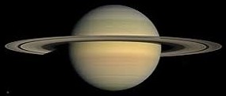

Saturn: The Jewel of the Solar System
Introduction

Saturn is the sixth planet from the Sun and the second largest in the Solar System, famous for its rings. A gas giant composed of hydrogen and helium, it has no solid surface, and its moons, especially Titan, show Earth-like features such as lakes, rivers, dunes, and rocky terrains.
Formation & Evolution
Saturn formed early from dust and gas in the solar nebula, accumulating a massive hydrogen-helium envelope around a rocky or metallic core. Rapid rotation, internal heat, and convective atmospheric motions shaped its cloud bands, storms, and rings. Gravity captured numerous moons and sculpted the outer Solar System.
Moons like Titan and Enceladus maintain ring structure, while internal heat drives convection, fueling jet streams and massive storms, including the Great White Spot.
Key Characteristics
- Gas giant: hydrogen (~75%) and helium (~25%), no solid surface
- Fast rotation: ~10 hours 13 minutes
- Orbital period: ~29.5 Earth years
- Density less than water; would float in a large enough ocean
- Atmosphere: swirling bands, violent storms, jet streams up to 1,800 km/h, Great White Spot
- Interior: gaseous hydrogen, liquid hydrogen, metallic hydrogen, rocky core
- Moons: >250 including Titan, Enceladus, Rhea, Iapetus
- Unique: moons interact gravitationally with rings
Saturn Atmosphere
Saturn’s atmosphere has layered clouds:
- Top: Ammonia ice clouds
- Middle: Ammonium hydrosulfide clouds
- Bottom: Water ice clouds
- Winds and storms create banded appearance and jet streams over 1,000–1,800 km/h
- Internal heat and “ice rain” from rings influence dynamics
Orbits & Motion
- Rotation period: ~10 hours 13 minutes
- Orbital period: ~29.5 Earth years
- Axis tilt: ~27°, mild seasons
- Moons’ orbits: regular moons prograde, outer irregular moons retrograde
- Moons like Janus & Epimetheus interact with rings; Saturn’s gravity shapes ring dynamics
Key Missions
- Pioneer 11 (1979): first spacecraft to Saturn, discovered moons and imaged rings
- Voyager 1 & 2 (1980-1981): detailed flybys of rings, moons, magnetosphere
- Cassini-Huygens (2004–2017): orbited Saturn for 13 years, studied planet, rings, moons
- Huygens Probe: landed on Titan in 2005, first landing in outer Solar System